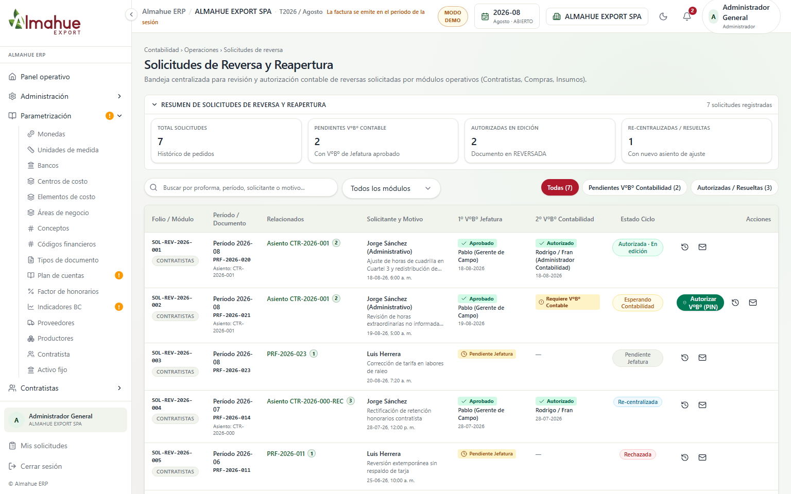
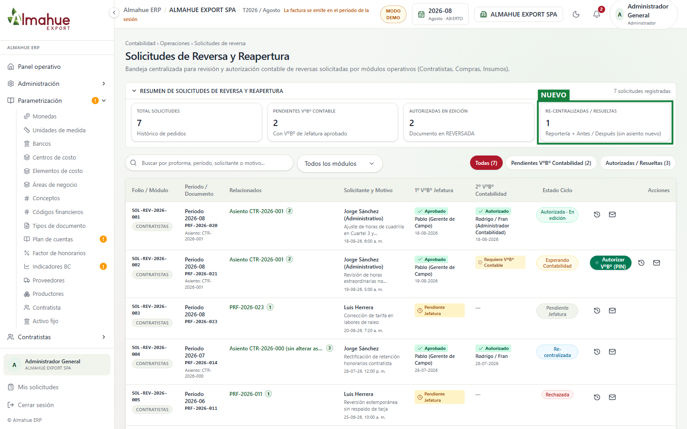
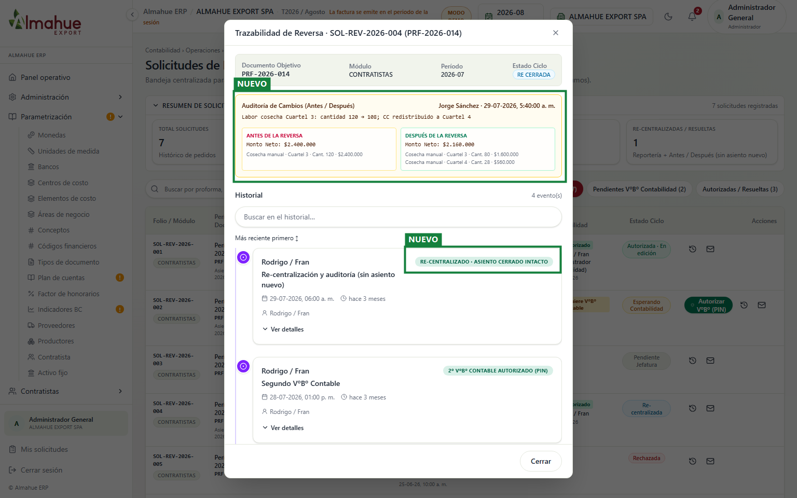
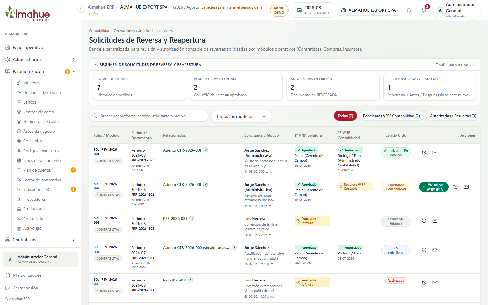
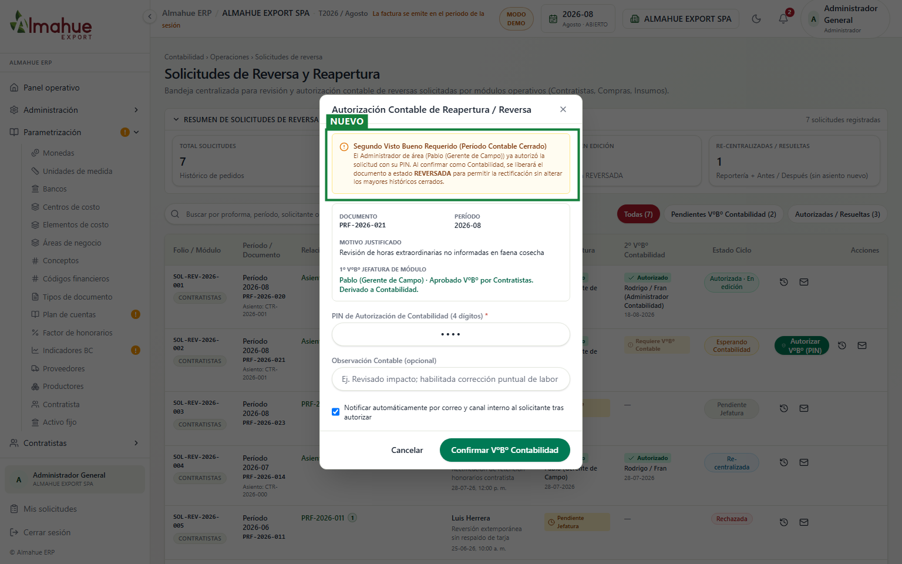

Ajuste contable post-reversa - definición MJ 03/11 vs pantalla
ALMAHUE EXPORT SPA, periodo 2026-08 (ABIERTO), Modo Demo. Capturas 1536x960. Definición cliente (MJ, PM [02:20:36]-[02:23:26]): cuando el periodo contable ya está cerrado, la corrección autorizada actualiza reportería y deja Antes / Después en auditoría; no genera ni modifica asiento. El recuadro verde y la etiqueta NUEVO están solo en la captura. Un clic abre la imagen. Ver también recorrido.html.
1. Contabilidad - KPI Re-centralizadas (copy del efecto)
Antes

Después

El copy del KPI dejaba la hipótesis temprana del PM ([31:00] / [32:48]: «va a generar un asiento de ajuste»). Queda alineado a MJ: reportería + trazabilidad, sin asiento nuevo. En Relacionados de SOL-REV-2026-004 también se ve la referencia «sin alterar asiento cerrado». No se pulsó Autorizar ni Confirmar.
2. Contabilidad - Trazabilidad Antes / Después (efecto real)
AntesDespués

Sobre SOL-REV-2026-004 (RE_CERRADA) se abre Trazabilidad e Historial. Ahí vive el Antes / Después de labor, cantidad y centro de costo, más el evento «Re-centralización y auditoría (sin asiento nuevo)». El backend ya dejaba `asientoNuevoNumero` como texto de referencia auditada; el copy del front decía lo contrario. No se guardó ni re-centralizó nada en esta captura.
3. Contabilidad - Autorizar VºBº con PIN (gate, sin asiento)
Antes

Después

El 2º VºBº Contabilidad solo libera la proforma a REVERSADA para editar. El aviso ya decía «sin alterar los mayores históricos cerrados». No se pulsó Confirmar VºBº Contabilidad.
izquierda / derecha: antes y después. + y - : zoom. Esc cierra